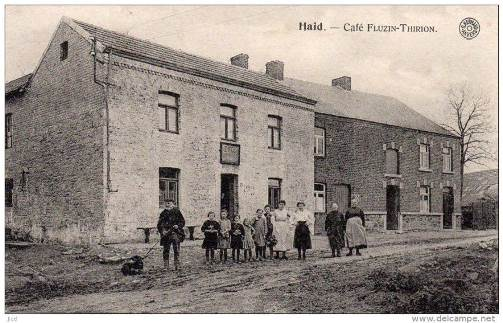
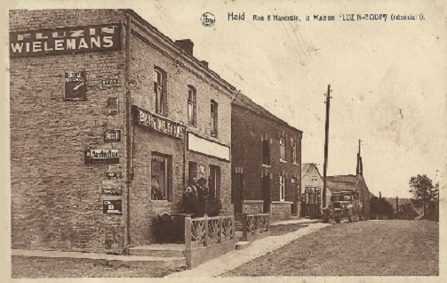

La vie passée...
L'idée de cette page serait de présenter différentes photos que vous nous permettriez de publier afin de montrer l'évolution de la vie du village comme le montre la photo suivante :
Un coin de rue que l'on reconnaît facilement.
Si vous avez des photos de ce genre que vous souhaitez partager, Contactez-nous !